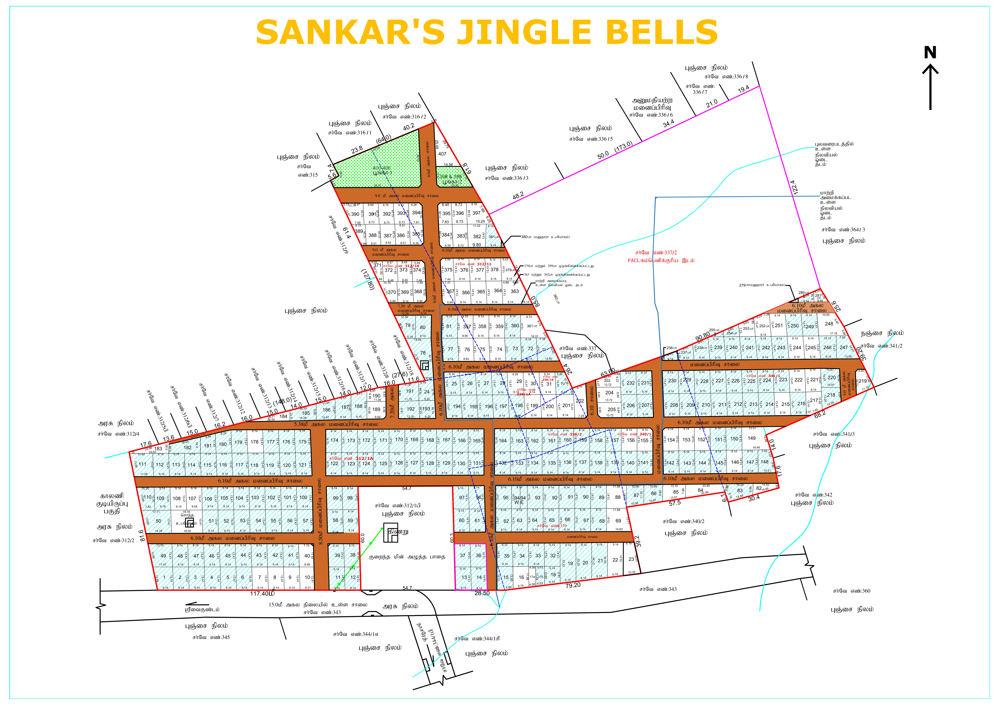

Sankar's Jingil Bells
Last Update : 19-09-2026
📂 PR Documents
▼
PR Documents — ஜானகிராம் மூல ஆவணங்கள்
📄
1520/2008
(24-Oct-2008)
கிரையம் — P. செல்வராஜேஸ்வரன் → S. ஜானகிராம்
↗
📄
1521/2008
(24-Oct-2008)
கிரையம் — 1. P. தங்க நாடார், 2. P. செல்வராஜேஸ்வரன் → S. ஜானகிராம்
↗
📄
659/2009
(17-Apr-2009)
பரிவர்த்தனை (Exchange) — S. ஜானகிராம் (1வது நபர்) → ஆ. துரை (2வது நபர்)
↗
📄
543/1999
(08-Jul-1999)
கிரையம் (47A நடவடிக்கை – 21/07/2008ல் வசூல்) — PN. மாடசாமி, N. சுவாமிநாதன் → செல்வ ராஜேஸ்வரன்
↗
📄
1027/1999
(10-Nov-1999)
கிரையம் (47A(1) நடவடிக்கையில்) — ஜார்ஜ் ஜெபஸ்டின் → P. தங்கநாடார், P. செல்வராஜேஸ்வரன்
↗
📄
7/2000
(04-Jan-2000)
பாகப்பிரிவினை — ஆ. வடிவேல், ஆ. தங்கவேல், ஆ. சிவபெருமாள், ஆ. செந்துார் பாண்டி, ஆ. துரை → எ.கொ…
↗
மனை எண் இல்லாத EC பதிவுகள் (சாலை தானம், பவர், PACL உத்தரவு முதலியன)
⚠️
862/2009
(19-May-2009)
கிரையம் — 1. ஆறுமுகம், 2. வின்சென்ட், 3. பூவம்மாள், 4. சோமசுந்தரம், 5. இஸ்ரவேல், 6. சத்தியசீ…
↗
📑
864/2009
(19-May-2009)
கிரையம் — 1. பி. சுவாமியடியான் நாடார், 2. பொ. துரைராஜ் நாடார், 3. சி. இளையபெருமாள் நாடார், 4…
↗
📑
865/2009
(19-May-2009)
கிரையம் — 1. வின்சென்ட், 2. யோ. செல்லத்தாய் அம்மாள், 3. சி. டேவிட் ராஜதுரை (எ) சி.ராஜதுரை, 4…
↗
📑
1935/2011
(28-Oct-2011)
கிரையம் — S. ஜானகிராம் → A. அந்தோணி பிரபாகர் நாடார்
↗
📑
22/2014
(07-Jan-2014)
பொது அதிகார ஆவணம் (Power) — S. ஜானகிராம் → R. ராம்குமார்
↗
📑
1358/2014
(19-Aug-2014)
இரசீது (Receipt) — ஆதிநாதபுரம் தொடக்க வேளாண்மை கூட்டுறவு வங்கி → லெஷ்மி ஆதிநாதன்
↗
📑
321/2015
(06-Mar-2015)
பொது அதிகாரம் ரத்து (Cancellation) — S. ஜானகிராம் → R. ராம்குமார்
↗
📑
322/2015
(06-Mar-2015)
கிரையம் — ச. ஜானகிராம் → சு. மாடசாமி
↗
📑
2547/2019
(04-Oct-2019)
கிரையம் — 1. ஹேமண்ட் சர்மா, 2. ஜானகிராம் → ஐசக்
↗
⚠️
2548/2019
(04-Oct-2019)
கிரையம் — 1. ஹேமண்ட்சர்மா, 2. ஜானகிராம் → ஐசக்
↗
📑
453/2020
(29-Jun-2020)
கிரையம் — மாடசாமி → பால்ராஜ்
↗
⚠️
24/2022
(19-Aug-2022)
நீதிமன்ற உத்தரவு (Court Order) — 1. PACL LTD, 2. டெல்லி உச்ச நீதிமன்றம் → 1. PACL LTD, 2. டெ…
↗
⚠️
25/2022
(19-Aug-2022)
நீதிமன்ற உத்தரவு (Court Order) — 1. PACL LTD, 2. டெல்லி உச்ச நீதிமன்றம் → 1. PACL LTD, 2. டெ…
↗
⚠️
28/2022
(22-Aug-2022)
நீதிமன்ற உத்தரவு (Court Order) — 1. PACL LTD, 2. டெல்லி உச்ச நீதிமன்றம் → 1. PACL LTD, 2. டெ…
↗
📑
549/2024
(16-Apr-2024)
தான ஆவணம் (Gift Deed) — ஜானகிராம் → உடையார்குளம் ஊராட்சி மன்ற தலைவர் மூலமாக தமிழ்நாடு மேதகு …
↗
ஜானகிராமுக்கு முந்தைய உரிமைத் தொடர் (EC-1 : 1975–2008)
📜
828/1975
(26-Jun-1975)
கிரையம் — பத்திர நாடார் → சுவாமி நாதன் ஆச்சாரி
↗
📜
852/1975
(01-Jul-1975)
இரசீது — தேவதாசன் நாடார் → தங்கவேல் நாடார்
↗
📜
853/1975
(01-Jul-1975)
கிரையம் — தங்கவேல் நாடார் → சுவாமிநாதன்
↗
📜
955/1975
(28-Jul-1975)
கிரையம் — இருதய நாடார், ஜெயசிங், லாரன்ஸ் → சுவாமிநாதன் ஆசாரி
↗
📜
811/1976
(21-Oct-1976)
கிரையம் — துரை ராஜ் ஜோசப் → சுவாமி நாதன் ஆசாரி
↗
📜
744/1983
(13-Aug-1983)
கிரையம் — சுவாமிநாதன் → மாடசுவாமி
↗
📜
1224/1983
(16-Dec-1983)
பாகப் பிரிவினை — மாடசாமி, சுவாமிநாதான் → எ.கொ.நபர்கள்
↗
📜
86/1984
(22-Feb-1984)
சுவாதீனமில்லாத அடைமானம் (அரசு கடன் ரூ.1500) — அரசு தமிழ்நாடு, N. சுவாமி நாதன் → அரசு தமிழ்நா…
↗
📜
87/1984
(22-Feb-1984)
சுவாதீனமில்லாத அடைமானம் (ரூ.2500) — N. சுவாமிநாதன் → அரசு தமிழ்நாடு
↗
📜
1080/1978
(05-Oct-1978)
கிரையம் — மெர்சி தேவசிகாமணி → பால் பாண்டி
↗
📜
1220/1978
(07-Nov-1978)
கிரையம் — பால்பாண்டி → ஆண்டாள் (கார்டியன்), லெட்சுமி ஆதிநாதன் (மைனர்)
↗
📜
1191/1995
(29-Nov-1995)
கிரையம் (47A(1) நடவடிக்கையில்) — லெட்சுமி முத்தப்பய்யங்கார், லெட்சுமி சுந்தரராஜன், L.M. ஆண்ட…
↗
📜
820/1997
(13-Oct-1997)
அடைமானம் (ஈடு ரூ.45000) — லெஷ்மி ஆதிநாதன் → ஆதிநாதபுரம் தொடக்க வேளாண்மை கூட்டுறவு வங்கி
↗
📜
366/1998
(12-May-1998)
அடைமானம் ரூ.1,00,000 — ஜார்ஜ் ஜெபஸ்டின் → ஜேம்ஸ்
↗
📜
367/1999
(10-May-1999)
இரசீது — P. ஜேம்ஸ் → ஜார்ஜ் ஜெபஸ்டின்
↗
📜
893/2008
(02-Jul-2008)
கிரைய உடன்படிக்கை ரூ.11,50,000 (முன்பணம் ரூ.1,10,000; கெடு 1 மாதம்) — தங்க நாடார், P. செல்வர…
↗
📜
246/1998
(01-Apr-1998)
அடைமானம் ரூ.23,320 — D. பிரின்ஸ் → அம்பலச்சேரி தொடக்க வேளாண்மை கூட்டுறவு வங்கி
↗
📜
78/2000
(28-Jan-2000)
அடைமானம் ரூ.40,000 — D. பிரின்ஸ் → அம்பலச்சேரி தொ.வே.கூ. வங்கி
↗
📜
1123/2000
(23-Oct-2000)
இரசீது — அம்பலசேரி தொ.வே.கூ. வங்கி → பிரின்ஸ்
↗
📜
1124/2000
(23-Oct-2000)
இரசீது — அம்பலசேரி தொ.வே.கூ. வங்கி → து. பிரின்ஸ்
↗
📜
253/1981
(12-Mar-1981)
கிரையம் — பால் பாண்டி நாடார் → தங்கவேலு
↗
📜
876/1997
(23-Oct-1997)
கிரையம் — பிலிப்ஜெயசிங் (ஏஜன்ட்), தங்கவேல் நாடார் (பிரின்ஸ்பால்) → டெய்சி ஆபிரகாம்
↗
📜
884/1997
(24-Oct-1997)
கிரையம் — பிலிப்ஜெயசிங் (ஏஜன்ட்), இளையபெருமாள் (பிரின்ஸ்பல்) → டெய்சி ஆபிரகாம்
↗
மொத்த பிளாட்டுகள்
Total
:
293
கிரையம் முடிந்தது
Sold
:
0
மறுவிற்பனை ஆனவை
Resold
:
0
Double Entry
Double
:
0
இருப்பு
Balance
:
0
🔍 தேடல்:
🏷️ Plot No
📄 Doc.No
🗺️ Survey No
👤 பெயர்
✕ Clear

வரைபடப் படம் திறக்கவில்லை.
இணைய இணைப்பைச் சரிபார்க்கவும்; அல்லது Plot_Map.webp கோப்பை இந்த HTML கோப்பு உள்ள அதே folder-ல் வைத்து மீண்டும் திறக்கவும்.
மேலே உள்ள தேடல் மூலம் வில்லங்க விவரங்களைத் தொடர்ந்து பார்க்கலாம்.
✕ Close